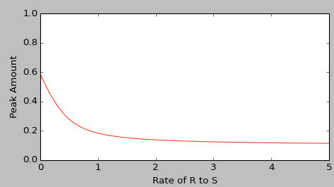
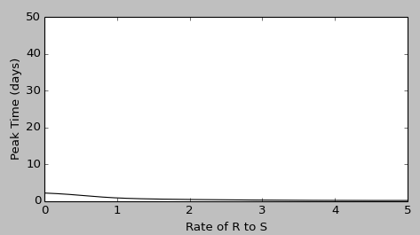

How does the presence of an official impact the panic levels in a group of people while in a fear-inducing situation?
Introduction
Overall, the central nervous system is most responsible for the pathophysiology of fear, and what causes fear and panic. Some regions of the brain that lit up during research and showed significance in inducing fear include the frontal and limbic regions (Cackovic, Nazir, Marwaha R, 2019). Any "unknown" fear or panic is managed by the limbic system; and the limbic region can be broken down further into the parahippocampal gyrus, amygdala, and cingulate cortex. When the body begins to detect the situation that might induce fear, panic is then provoked by the parahippocampal gyrus (PHG) and the cingulate cortex (Lai, Wu, 2016). Serotonin and how the body inhibits serotonin was also found to be a huge factor regarding how the body induces panic in people with or without panic disorders. Increased serotonin causes changes in the body's fear network and autonomic nervous system (Cackovic, Nazir, Marwaha R, 2019).

When fear strikes, the body and mind undergo physiological changes to alter energy levels, alertness, and strength; the "flight-or-fight" response is a product of the sympathetic branch of the autonomic nervous system (Harvard Health Publishing Team, 2018). The chain of reactions shown above represent how the brain alerts the rest of the body to be in a state of fear. The Harvard Health Publishing Team (2018) also stated that the surge of epinephrine brings along many physiological changes that aid the body in an emergency situation. The body's heart rate increases to provide blood flow for the muscles to become faster and stronger, small airways increase size in the lungs for maximum oxygen intake that allows for increased alertness in the brain, and storage of glucose and fats is released into the bloodstream to be used for energy (Harvard Health Publishing Team, 2018).
The Harvard Health Publishing Team also informs that once the original flood of epinephrine subsides, the hypothalamus activates the 'hypothalamus, pituitary gland, and the adrenal gland' [HPA] axis. The hypothalamus releases corticotropin-releasing hormone to the pituitary gland, where it triggers the release of adrenocorticotropic hormone that allows the body's heightened strength and senses to remain until the person is no longer in a state of panic once it travels to the adrenal glands to cause a surge of cortisol. While the sympathetic branch of the autonomic nervous system is responsible for triggering the "flight-or-fight" response, the parasympathetic branch is responsible for triggering the "rest-and-digest" reaction that allows the body to use energy where it is needed during an emergency (Harvard Health Publishing Team, 2018).
As Li, Tang, & Wang (2019) suggested, a population with high levels of trust in officials will effectively result in an increase in the recovered population. An official's presence is meant to ease the population that becomes panicked, in order to ensure a calmer populace when emergency responders arrive to the area (Li, Tang, & Wang, 2019.)
All of this information led us to develop our guiding research question: "How does the presence of an official impact the panic levels in a group of people while in a fear-inducing situation?"" We expected the outcome to be as follows: when authority and presence of an official is trusted at a higher level, then panic levels of the group would decrease. To test our theory, we charted those who were susceptible, infected, recovered, and susceptible once more to panic in an adapted SIRS model created in Python 3.2.5 run on IDLE. Li, Tang, & Wang (2019) outlined our notable compartments regarding the spread of panic in their similar model. Those who are considered susceptible easily change mindsets and become panicked. The infected group spreads panic to the surrounding people during the emergency. The recovered, or calm, group has experienced panic, yet calms down. The recovered group is also unstable because of the fact that their mindsets could change because of internal and external factors of the emergency, thus resulting in another susceptible group (Li, Tang, & Wang, 2019).
Methods
Equations
(1) ˢ⁽ᵗ⁾⁄dt = -αk̂I(t)S(t) + γk̂I(t)R(t) + λ₃R(t) - λ₁S(t)
(2) ᶦ⁽ᵗ⁾⁄dt = αk̂I(t)S(t) - βk̂I(t)R(t) - (ε + λ₂)I(t)
(3) ᴿ⁽ᵗ⁾⁄dt = βk̂I(t)R(t) + (ε + λ₂)I(t) + λ₁S(t) - λk̂I(t)R(t) - λ̂ ₃R(t)
In order to accurately display our research, our team utilized the mathematical equations (1-3) to analyze the changes in the population. Since this study revealed the spread of panic in an enclosed population, our population remained the same throughout the iterations. Our team adapted the SIRS model to display changes within our population. While it may seem strange to use an SIRS model to explore the spread of panic, it is quite accurate. This being due to the fact that panic, much like an infectious disease, is spread throughout a population unknowingly. By using the previously mentioned model, our team was able to analyze the susceptible, infected (panicked), and recovered individuals in the population.

In these particular equations, represents the rate of infection. In addition to that, k represents the density of individuals in the population. As we explored our initial research question, we modified the trust parameters in each of the equations to display how the presence of an official will impact the spread of panic in a population. During the course of our experiment, our group chose to use the time interval of 50 minutes. As 50 minutes is a realistic amount of time a group of people would be stuck in one area, before assistance arrives at the scene. Interestingly, with our mathematical model, time will be especially important when measuring trust-loss rate (3) in our population. Of course, time and density will impact the occurrence of reinfection (), as more calm individuals are in contact with panicked individuals they will become panicked again. In order to signal the incorporation of an official, 1represents the initial trust in the population (or rather, how likely the group is to accept the assistance from the official). 2is the rate at which the panicked (infected) individuals become calm after interaction with the official.
The main drawback of our experimentation is the very fact that our population is stagnant, as in a real panicked environment, individuals would begin leaving the area as a natural response to the stressful environment.
Results
As we hypothesized, the more trust put in guidance and/or the more guidance present, the fewer people become panicked and the quicker panic subsides (see Figure 5). Between an alpha of 0 and .5, every little increase in guidance significantly dropped the proportion of those in panic, but, beyond .5, the effectiveness of increased guidance lessened quickly.

Figure X. Peak panic as a function of alpha value.
This curve can be approximated with the curve of best fit (see Figure 6):
y = .592x⁴¹ + .121x + .677 (R²=.9662)

Figure X. Curve of best fit for peak panic as a function of alpha value.
In contrast to the peak amount of panicked, the peak time of panicked was only slightly affected by the change in the alpha value (see Figure 7). With our values, panic was already at a low peak time of about two even without any guidance at all. As such, the peak time could only be nudged so far by the alpha value before it is practically at minute zero.

Figure X. Peak panic time as a function of alpha value.
This curve can be approximated with the curve of best fit (see Figure 8):
y = (2.164 / (1.604 + .17e⁴.⁰⁰⁵ˣ)) + .036² - .34x + 1.001 (R² = .9991)

Figure X. Curve of best fit for peak panic time as a function of alpha value.
Discussions and Conclusions
The purpose of this research was to explore the implications of an official's presence in an enclosed population when panic ensues. In order to measure this change, we used an adapted SIRS model to measure the spread of panic in a stagnant population. While measuring susceptible, infected (panicked), and recovered populations, our team was able to display the changes in our computer program. When creating the code, our team was able to modify our equations (1-3) and create a graphical representation of the various populations over time.
After analyzing the model, it became clear that the presence of an official does have a significant impact on the level of panic in a population. An official's presence can be effective when attempting to calm a population in an enclosed space (Li, Tang, & Wang, 2019). Our results did support our expected outcome, as we predicted that the group with an official would have a smaller panicked population.
Our findings suggested that the addition of authority and legitimacy of authority plays an important role in the spread of panic among a population. Li, Tang, & Wang (2019) did a similar study to ours, analyzing the effect of an official on the spread of fear and panic. Their results correlated with ours, and helped to display worldly application. They found that having a trusted official present in a stressful situation can help reduce the spread of panic among the individuals present in a subway emergency. Through analyzing the high stress situation of being trapped in a stopped subway car, they were able to take their findings and convey them in a real world situation. The same applies to our results, for they are so similar in comparison (Li, Tang, & Wang, 2019). According to Bystritsky, Khalsa, Cameron, & Schiffman (2013), fear and panic is also influenced greatly by environmental factors. Being able to manage the environment in the real world is a crucial finding to reduce the spread of panic among individuals (Bystritsky, Khalsa, Cameron, & Schiffman 2013).
In the field of group panic, there is much more to learn about in the years to come. It will be important to study how panic spreads throughout different demographics and in varied situations. While our study observed the impact of having an official present during an emergency, it would be interesting to observe how medical personnel could possibly relieve panic as well. As time goes on, there also may be more or less to be panicked over in the world, and it is adamant that researchers continue to study how certain historical events impact the spread of panic. In a study performed by Boscarino, Figley, & Adams (2009), a multivariate model was utilized to represent the impact on the spread of epidemic panic in residents of New York, New York after the September 11th terrorist attacks in 2001. By evaluating phone surveys, participants proved to have a higher sense of worry for terrorist attacks and other disasters after the tragedy on September 11th, 2001. Research like this, as time is constantly changing, will be important to see how our worldly events impact the spread of panic.
Our adapted SIRS model charted those who were susceptible, infected, recovered or calm, and susceptible after experiencing calmness. The purpose of our model was to exhibit how the addition and legitimacy of trust in authority impacted the peak number and interval time of panicked people in an emergency situation. The study was guided by our overarching research question, “How does the presence of an official impact the panic levels in a group of people while in a fear-inducing situation?” Ultimately, our model showed that as trust in and presence of authority increased, the fewer panicked people there were at peak and the panic subsided quicker. Our model is important because it precisely shows how the presence of an official can ease one’s mind and decrease the spread of panic in an emergency situation.
Works Cited
Blackwood, J. C., & Childs, L. M. (2018). An introduction to compartmental modeling for the budding infectious disease modeler. Letters in Biomathematics, 5(1): 195-221. doi: 10.1080/23737867.2018.1509026
Boscarino, J. A., Figley, C. R., & Adams, R. E. (2009). Fear of terrorism in New York after the September 11 terrorist attacks: implications for emergency mental health and preparedness. International Journal of Emergency Mental Health, 5(4), 199-209.
Cackovic C, Nazir S, Marwaha R. Panic Disorder (Attack) [Updated 2019 Dec 1]. In: StatPearls [Internet]. Treasure Island (FL): StatPearls Publishing; 2020 Jan-. Available from: https://www.ncbi.nlm.nih.gov/books/NBK430973/
Harvard Health Publishing Team. (2018). Understanding the stress response. Retrieved from https://www.health.harvard.edu/staying-healthy/understanding-the-stress-response
Kirkeby, C., Halasa, T., Gussmann, M., Toft, N., & Græsbøll, K. (2017). Methods for estimating disease transmission rates: Evaluating the precision of Poisson regression and two novel methods. Scientific Reports, 7(9496): 1-11. doi:10.1038/s41598-017-09209-x
Kumar, R. (2015). Future For Scientific Computing Using Python. ResearchGate. Retrieved April 29, 2020, from https://www.researchgate.net/publication/280521078_Future_For_Scientific_Computing_Using_Python
Lai CH, Wu YT. (2016). The Explorative Analysis to Revise Fear Network Model for Panic Disorder: Functional Connectome Statistics. Medicine (Baltimore). 95(18):e3597. doi:10.1097/MD.0000000000003597
Lemenkova, P. (2019). ). Processing oceanographic data by python libraries numpy, scipy and pandas. Aquatic Research, 2(2), 73-91. https://doi.org/10.3153/AR19009
Li, J., Tang, J., & Wang, D. (2019). Dynamic Spreading Model of Passenger Group Panic considering Official Guidance Information in Subway Emergencies. Mathematical Problems in Engineering, 2019, 1-17. doi: 10.1155/2019/4691641
Li, S., Eisenberg, J. N. S., Spicknall, I. H., & Koopman, J. S. (2009). Dynamics and Control of Infections Transmitted From Person to Person Through the Environment. American Journal of Epidemiology, 170(2): 257-265. doi:10.1093/aje/kwp116